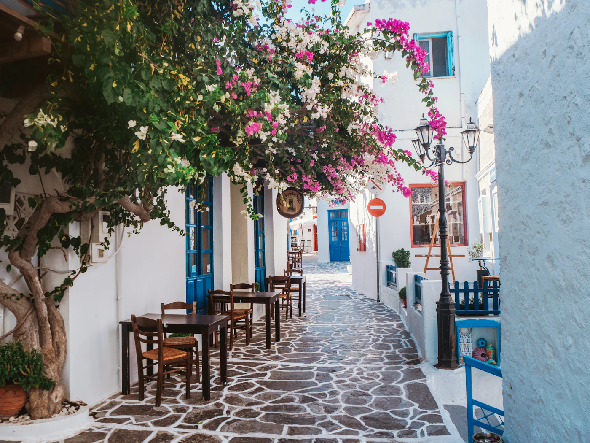
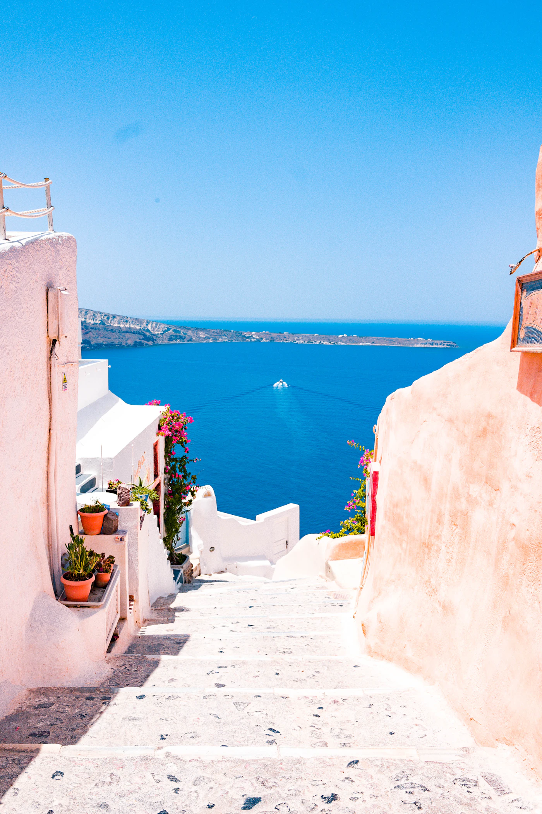

Reiseführer / Thessaloniki
Thessaloniki — beste Reisezeit, Flughafen, Chalkidiki, Sehenswürdigkeiten

Wann nach Thessaloniki reisen — Stadt oder Kombination mit Chalkidiki
Frühling und Herbst sind am angenehmsten für die Stadtbesichtigung — weniger Hitze, weniger Touristen als in Athen. Im Sommer (Juli–August) kann die Stadt drückend werden, aber die Nähe zu Chalkidiki (etwa 1-1,5 Std. Fahrt) macht Thessaloniki zu einer praktischen Basis für die Kombination Stadt + Strand — Vormittag in der Stadt, Nachmittag am Meer. Der Winter ist mild, gut für einen kurzen Städtetrip ohne Strand.
Flughafen Thessaloniki und der Weg ins Stadtzentrum
Der Flughafen Makedonia (SKG) liegt etwa 16 km vom Zentrum entfernt. Ins Stadtzentrum kommt man mit dem Stadtbus (Linie 78/78N, günstige Option, fährt auch nachts), mit dem Taxi (fester Preis in die Stadt, schneller und praktischer mit Gepäck) oder mit einem Mietwagen direkt ab dem Flughafen, wenn du auch einen Ausflug nach Chalkidiki planst. Thessaloniki ist auch ein sehr beliebtes Ziel für Serben, die mit dem Auto oder Bus über die Autobahn E-75 reisen — die Fahrt von Belgrad dauert etwa 5-6 Stunden.
Was eine Reise nach Thessaloniki kostet — Richtpreise
- Weißer Turm — Eintritt etwa 8 €, Wahrzeichen der Stadt und Museum zur Geschichte Thessalonikis im Inneren.
- Museum für byzantinische Kultur — etwa 8 €, eines der besten Museen dieser Art in Griechenland.
- Essen in Tavernen — 10-15 € pro Person, generell günstiger als in Athen bei ähnlicher Qualität.
- Auto oder organisierter Transfer nach Chalkidiki (Kassandra) — etwa 1-1,5 Std. Fahrt, eine gute Option für einen Tagesausflug an den Strand.
Sehenswürdigkeiten in Thessaloniki in 2-3 Tagen
- Weißer Turm — Wahrzeichen der Stadt direkt am Meer, steig auf die Spitze für einen Blick über die Bucht von Thessaloniki.
- Nikis-Promenade — die Hauptpromenade am Meer, ein guter Ort für den Abend und Kaffee.
- Rotunde (Kirche des Hl. Georg) — ein römisches Monument, das zur Kirche wurde, eines der Wahrzeichen der Stadt.
- Oberstadt (Ano Poli) — der Teil mit byzantinischen Stadtmauern und engen Gassen, mit dem besten Blick über die ganze Stadt.
- Aristoteles-Platz — zentraler Platz zum Spazieren und für Cafés, Ausgangspunkt zur Erkundung des Zentrums.

Wo man in Thessaloniki essen sollte — lokale Speisen zum Probieren
Thessaloniki gilt als die Feinschmeckerstadt Griechenlands, mit etwas niedrigeren Preisen als in Athen bei gleicher Qualität. Unbedingt probieren: Bougatsa (süßes oder herzhaftes Blätterteiggebäck zum Frühstück, eine Spezialität der Stadt), Gyros von Straßenständen, und ein Abendessen mit Tsipouro und Meze im Viertel Ladadika, das voller kleiner Tavernen und Bars ist. Der Modiano-Markt ist ein guter Ort, um den lokalen Alltag zu erleben und frische Zutaten zu finden.
Geheimtipps in Thessaloniki abseits der Hauptrouten
- Viertel Ladadika — einst ein Lagerviertel, heute der lebendigste Ort für das Nachtleben, bei Touristen auf der Durchreise weniger bekannt.
- Festung Eptapyrgion (Yedikule) — ganz oben in der Oberstadt, Panoramablick über die gesamte Bucht von Thessaloniki ohne Menschenmassen.
- Modiano-Markt — renovierter alter Markt mit lokalen Produkten und kleinen Tavernen im Inneren.
- Perea — ruhiger Küstenort nahe der Stadt, eine gute Erholung vom Stadttrubel, wenn du ein Auto hast.
Praktische Tipps vor der Buchung
- Dokumente — Griechenland gehört zum Schengen-Raum; prüfe die Einreisebestimmungen für deine Staatsangehörigkeit vor der Reise.
- Kombination mit Chalkidiki — wenn du auch ans Meer willst, sind Mietwagen oder ein organisierter Transfer für eine Gruppe günstiger als einzelne Taxis.
- Saisonpreise — Unterkünfte im Juli/August werden teurer, während Frühling und Herbst günstiger und weniger überlaufen sind.